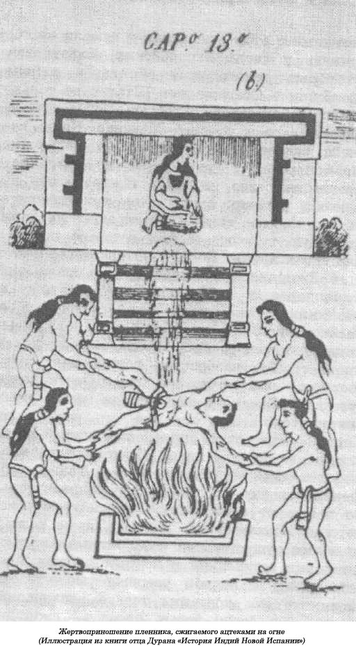
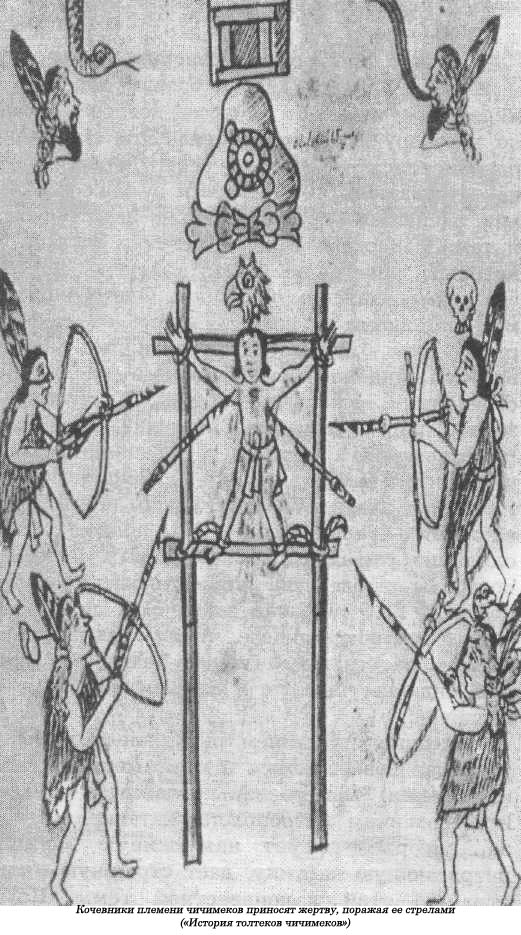

Обычаи и мифы североамериканских индейцев.
Многие из американцев воспитаны на книгах Фенимора Купера, таких, как «Последний из могикан», на рассказах о краснокожих и ковбоях, на знаменитой «Песни о Гайавате» Лонгфелло. В этой поразительно большой поэме сосредоточено все богатство американского фольклора, самые романтические рассказы о коренных жителях Американского континента.
Они, эти сказания, представляют собой мифологию таких племен, как деловары, могикане, чокто, каманчи, шошоны, черноногие, гуроны и оджибве, и многих других, которых для удобства Лонгфелло в своей поэме разместил на берегу озера Верхнего со стороны штата Висконсин, на истинной родине индейцев оджибве.
На территории Северной Америки индейцы вели беспощадную войну со вторгшимися сюда захватчиками-христианами, проявляя при этом неслыханную жестокость по отношению к захваченным пленникам, своим жертвам. Они, как и многие южноамериканские народы, тоже использовали их в своих священных ритуалах, которые поразительно напоминали обряды, принятые в Старом Свете. Если на таких ритуальных церемониях и менялось снаряжение палача, то этот факт лишь отражал уровень развития технологии на данном этапе; так, если для этой цели в XVIII веке в Африке использовался меч, то в Мексике — острый нож из застывшего вулканического стекла, а в странах Южной Америки — деревянная дубинка. Каннибализм хотя и был здесь распространенным явлением, но не носил универсального, всеобщего характера.
Мы не располагаем убедительными свидетельствами о прибытии в Америку каких-либо путешественников из Старого Света до Колумба, за исключением, может, викингов, которые, правда, оставили после себя очень мало следов. Подобные близкие параллели между двумя полушариями убедительнее всего можно объяснить существованием на том месте, где сегодня Берингов пролив, узкой полоски суши, «этого мостика», связывающего когда-то Северо-Восточную Азию с Северо-Западной Америкой. Эта полоска земли ушла под воду только около 12 000 лет назад. Культ «человеческих черепов» существовал и в Америке задолго до того, как она была отделена от Азии. Этот культ наравне с другими примитивными формами религии стал общим наследием для «охотников за черепами», часть которых перебралась в Новый Свет, а часть осталась на прежнем месте, в Азии. Таким образом, и местные обычаи развивались в том же направлении, что в Евразии и Америке, — у них были одни и те же глубокие общие корни.
Вряд ли стоит повторять длинный список ритуальных убийств, совершенных на территории Америки, — точно такие же происхо дят и в тех местах, которые мы выше назвали. В этой главе я намерен дать свои характеристики лишь тем народам Нового Света, которые отличаются чем-то своеобразным, необычным. Например, если в других регионах идея о том, что жертва должна быть одновременно и другом и врагом, давала о себе знать лишь подспудно, не очень ясно, то в обеих Америках она выражалась куда более открыто. Как в Южной, так и в Северной Америке у некоторых туземных племен существовал странный обычай вначале радушно относиться к своей будущей жертве. Таким образом, между жрецом и «козлом отпущения» устанавливались отношения любви-ненависти. Жертва уже не была чужаком, а становилась членом семьи хозяина, захватившего ее в плен, и так продолжалось довольно долго, до дня жертвоприношения, иногда в течение целого года.
Нужно подчеркнуть, что, скажем, в отличие от ацтеков в Новом Свете от жертвы требовалось более активное участие в религиозных ритуалах, в ходе которых она должна была принять смерть. От пленника требовали, чтобы он, словно в исступлении, пел и танцевал — это было частью предусмотренного заранее «шоу» для зрителей. Другой отличительной чертой жертвоприношений у североамериканских индейцев было применение пыток. При этом мучители добивались особенно продолжительной и интенсивной агонии такими же разнообразными методами, что и инквизиция, а это заставляет предположить, что индейцы оказались способными учениками в этом отношении и сумели многое перенять у своих европейских захватчиков. Некоторые религиозные обряды в районе Миссисипи в Соединенных Штатах не только сильно напоминают подобные, существовавшие когда-то, в древней Мексике. Когда испанцы завоевали эту страну, а испанские миссионеры все увереннее продвигались дальше на север, индейцы превратились не только в стойких защитников христианского Евангелия, но еще и прекрасно усвоили испанскую технику пыток, которым подвергали своих врагов. Когда индейцы гуале (ныне штат Джорджия) восстали против испанских миссионеров в 1597 году, то захватили в заложники священника, превратив его в обыкновенного раба. Более того, однажды, когда он в чем-то провинился, они, привязав его к столбу, разбросали вокруг него кучу хвороста, имитируя тем самым испанское аутодафе. Однако в отличие от несгибаемых инквизиторов они все же его отпустили. Первые испанские путешественники, посетившие юг Соединенных Штатов, редко упоминали индейские методы пыток. Такие сообщения большей частью поступали значительно позже от английских и французских искателей приключений. Поэтому, даже если у индейцев существовали свои ритуальные пытки до их вступления в контакт с европейцами, можно с полной уверенностью утверждать, что эти контакты только вдохновляли их на разработку новых методов — сжигание жертвы живьем было, несомненно, заимствованной технологией расправы.
В начале XVIII века англичане с севера, а испанцы с юга вступили в боевые действия с индейским племенем ямассе, которое обитало к северу от реки Саванна. Эти смельчаки перебирались на другой берег, захватывали на завоеванных чужеземцами землях испанских пленников, привозили их в свои поселки и там подвергали таким жестоким пыткам, о которых ничего не было известно другим североамериканским индейцам. Одних ножами и томагавками медленно, кусок за куском, расчленяли, других погружали по шею в воду, а индейцы с небольшого расстояния стреляли в них из луков, метя стрелой в голову. Был и еще один вариант: пленников привязывали к дереву и пронзали самые чувствительные части их обнаженных тел горящими заостренными с одного конца головешками — такая изощренная пытка стала одной из самых распространенных. Но даже подобные злодейства не остановили испанцев, и в 1715 году они заключили дружеский союз с племенем ямассе, чтобы с их помощью изгнать из страны англичан. Таким же образом индейцы пытали и захваченных в плен англичан.
Подобным описанием ритуальных пыток и убийств, совершаемых североамериканскими индейцами, мы обязаны главным образом исследованиям антрополога Натаниэля Ноулза, который рисует нам живую, сочную, потрясающую картину, дает страшную иллюстрацию этой малоизвестной темы. Ноулз приводит рассказ очевидца об особой пытке, которую применяли индейцы племени натче зов, обитавшие в нижнем течении реки Миссисипи. Вначале они вгоняли в землю два шеста, которые соединялись вверху двумя поперечными. Жертву подвешивали так, чтобы несчастный чуть касался ногами земли, и в таком виде оставляли его на время оплакивать свою горькую судьбу, а сами индейцы рассаживались вокруг для трапезы.
Закончив трапезу, они подходили к сооружению, на котором висела, покачиваясь, жертва. Несколько раз поворачивали его вокруг оси, чтобы все всё хорошенько видели. Затем тот воин, который взял несчастного в плен, обрушивал свою дубину ему на затылок, отчего тот издавал ужасающий вопль, и принимался методично снимать с пленника скальп, стараясь не порвать кожу. Пока воин стаскивал с еще живого пленника скальп, юноши племени отправлялись на поиски сахарного тростника. Измельчив сухие стебли, они загоняли острые кусочки в ту часть тела пленника, которая им понравилась. Тот, кто считался его хозяином, брал в руки сухой стебель и, поджигая его, этим факелом тыкал несчастного. Но прежде всего его внимание привлекала правая рука жертвы, та, которой пленник оказывал сопротивление в бою. Другие, вытащив изо рта дымящиеся трубки, прижигали ими ноги несчастного. В общем, каждый из индейцев действовал по своему усмотрению, чтобы причинить жертве боль любым способом, покуда у нее еще сохранились силы и она не умерла.
Если пленник еще был жив, они заставляли его петь песню смерти, которая представляла из себя череду горестных воплей, стонов, криков. Некоторых пленников индейцы заставляли постоянно в течение трех дней и трех ночей «репетировать» свою роль, не давая жертве воды, чтобы утолить жажду, даже если она униженно умоляет их об этом. Но, по сути дела, пленники никогда с такими просьбами к своим палачам не обращались, заранее зная, что у их врагов каменные сердца.

Иногда такой пытке подвергались и европейцы. Известны два случая — в 1729 и 1730 годах, — когда подобной процедуре подверглись два француза. Перье сообщил, что после подавления мятежа племени натчезов он отдал приказ заживо сжечь четырех мужчин и двух женщин. Племя чикасов, жившее по течению реки Миссисипи, на этом не остановилось. В 1736 году, когда французы объявили им войну, они сожгли на медленном огне живьем двадцать шесть французских солдат и семерых офицеров. Племя чароки тоже славилось своими ритуалами, но самыми изощренными заплечных дел мастерами были племена ирокезов, гуронов, маскали и прочие их соседи на севере страны. Очевидцем таких пыток стала Мэри Джемисон, которая была приемной дочерью в племени ирокезов. Она рассказывает, как индейцы из Кентукки пытали белого пленника в 1759 году, нанося ему многочисленные порезы по всему телу, а потом избивая маленькими прутиками. Она даже приводит описание различных технических приемов. Среди них: прикладывание горящих головешек, тлеющих углей и раскаленного металла к разным частям тела; посыпание нагретым песком и тлеющими углями головы, с которой только что был снят скальп; вырывание всех волос на голове и в бороде; связывание тела горящими веревками; нанесение увечий: уродование ушей, носа, губ, языка и других частей тела; прижигание изуродованных частей тела; вырывание ногтей; выламывание пальцев; насаживание обрубков на маленькие вертела, вытягивание жил из рук. В 1782 году шошоны поджарили на медленном огне английского офицера по имени Кроуфорд.

В отличие от южных племен, которые применяли для пыток сооружение типа дыбы, северяне чаще всего возводили что-то вроде эшафота с платформой, на которой пленники встречали свой печальный конец. Сообщения о ритуальных пытках среди этих племен поступали на протяжении более двух веков. Французские путешественники и миссионеры впервые столкнулись с племенами алгонкинов и ирокезов в районе реки святого Лаврентия в начале XVII столетия. Иезуиты создали живые, леденящие душу описания всех их жестокостей и злодейств, из которых явствовало, что любой контакт с этими индейцами мог завершиться жесточайшими пытками и смертью. Детали таких издевательств несколько изменяются в разных племенных группах. Отец Ле Жен, которого часто цитирует Ноулз, составил в 1637 году доклад по поводу того, как гуроны относились к ирокезам, и нарисованная им картина приводит любого человека в ужас.
По словам Ле Жена, ритуал начинался с наступлением сумерек, когда зажигались одиннадцать костров. С радостными воплями и стар и млад высыпали на деревенскую площадь, либо с горящей корой в руках, либо с факелом. Жертву заставляли бегать между костров, а его преследователи пытались догнать его и прижечь или применить какую-либо иную пытку, а когда преследуемый терял сознание, его приводили в чувство. Среди индейцев не было никаких ссор по поводу того, кто первым должен прижечь пленника, — каждый это делал по очереди. Пока одни наслаждались пыткой, другие придумывали все новые способы, как сильнее помучить жертву. Как только вопли несчастного стихали, все начиналось снова. Факелы затухали, и их приходилось постоянно поджигать. Для этой цели все дружно раздували костры. Однако и этого казалось мало. Тогда несколько человек, обвязав пленника веревками, поджигали их, чтобы насладиться его страшной агонией. Никто не оставался в стороне, каждый стремился перещеголять своего собрата в изощреннейшей жестокости.
Как только светало, мучители гасили костры, и теперь солнце освещало кровавую сцену. Пленника отводили в сторону. Два индейца, схватив его за руки, заставляли жертву подняться на эшафот высотой шесть или семь футов. Несчастного привязывали к растущему рядом дереву, что позволяло ему более или менее свободно передвигаться по платформе, затем начинали прижигать его горящими факелами еще более энергично, чем прежде, не оставляя теперь на всем теле живого места. Когда пленник уклонялся от факела одного из палачей, его доставал факел другого. Пытка шла беспрерывно — жертве заталкивали горящие головешки в горло, в задний проход, выжигали глаза, раскаленными докрасна лезвиями топоров рубили плечи, шею, спину. Так мучители издевались над пленником, покуда у него не прерывалось дыхание. Тогда ему вливали в горло воды, а главный палач кричал, что несчастный может немного отдохнуть. Он уже ничего не слышал, лежал неподвижно, рот у него был широко раскрыт. Опасаясь, что жертва может умереть в любую минуту, но не от ножа, один из палачей поспешно отсекал ему руку, второй — ногу, а третий отрубал голову, которая летела в толпу.
Однако не всех пленников ждала такая страшная судьба. С теми, кому особенно повезло, обращались с лаской и любовью и даже принимали их в состав племени. В судьбе пленников решающее слово было за женщинами, и у самых сильных и здоровых появлялся шанс стать членом племени. Довольно часто какая-нибудь вдова обретала таким образом нового мужа. Однако даже если пленника принимали в племя, это еще не означало, что ему гарантирована жизнь. Так, некий вождь племени ирокезов принял в свое племя более сорока пленников, но потом всех до одного сжег живьем. Даже те из них, кто заменил вдовам утраченных мужей, могли подвергнуться ужасным пыткам и даже умереть, если только, по словам их новых жен, они оказались не на уровне в постели.
Хотя многие сведения об обычаях североамериканских индейцев поступали в основном от миссионеров, они сильно отличаются от рассказов францисканского монаха де Саагуна и других испанцев, побывавших в древней Мексике. Если де Саагун вникал в каждый аспект туземной религии, иезуиты и другие священнослужители, описывающие нравы и обычаи североамериканских племен, в основном сосредоточивали свое внимание на обращении их с пленниками, не останавливаясь особенно на их религиозных верованиях и причинах, вызывавших такое жестокое обращение с чужаками. Довольно часто клирики говорят о том, что во всем виновата чисто индейская жестокость, та радость, которую испытывают индейцы при виде человеческих страданий, или все объясняют их страстью к человеческому мясу. Тем не менее многочисленные свидетельства очевидцев не могут скрыть того убедительного факта, что, какими бы дикарями американские индейцы ни были, все их действия оставались религиозными по своей природе. Ле Жен, например, подчеркивает, что гуроны вначале, как правило, очень ласково относились к своим жертвам, очень мягко, по-родственному. Пленника заставляли все время танцевать и петь в каждой деревне на пути к дому своего хозяина. Далее каннибализм объяснялся религиозным ритуалом, а сердце пленника, которое вырывали у него из груди, часто отдавали юношам племени. Среди индейцев ирокезов богу войны приносились в жертву и женщины, если у них в этот момент не оказывалось пленников-мужчин, в таком случае они устраивали в честь этого божества праздник, на котором ели медвежье мясо, если человеческого не было под рукой. Ле Жен отмечает, что, когда в жертву приносился пленник из племени ирокезов, то вождь племени, взявшего его в плен, сообщал своим соплеменникам, что на этой торжественной церемонии будут обязательно присутствовать бог Солнца и бог Войны.
Интересно отметить и отношение американских индейцев к скальпам. Это тоже был тщательно разработанный религиозный обряд, особенно на юге нынешних Штатов, где прежде с жертвы снимали скальп, а только после этого подвергали остальным пыткам. Так, иссиу, жившие на берегах Миссури, вначале развешивали скальпы на деревьях, распевая религиозные гимны в их честь, после чего помещали их в золу от вечного огня, поддерживаемого в храме, выставляя перед ними в качестве приношения еду. Индейцы племени повне применяли скальпы в качестве церемониальных даров своим богам. Старые женщины из племени натчезов надевали на себя скальпы во время ритуальных танцев, когда молили Солнце принести победу своему племени. Повсюду на юго-востоке американские индейцы считали скальпы религиозными приношениями, и там, где это практиковалось, например в Мексике, черепа жертв обычно складывались в кучи рядами перед входом в храм.
На противоположной оконечности североамериканского континента племена индейцев, живших на северо-западном побережье Канады, практиковали такие экзотические способы каннибализма, которые почти ни в чем не были похожи на подобные обычаи в Старом Свете. Как и в случаях каннибализма в Западной Африке, все основывалось на тайных обществах. Племена индейцев квакиутль обитали на расстоянии двух тысяч миль от североамериканских племен, к западу от озера Верхнего, на американо-канадской границе, где она, делая крюк, огибает по заливу Хуан де Фука южную оконечность острова Ванкувер.
Члены племени, разумеется, были охотниками, как и все североамериканские индейцы, — охотниками, умеющими ставить капканы. Но еще и рыбаками, что было обусловлено местами их проживания. Горы и леса Британской Колумбии были их «глубинкой», а холодное побережье Тихого океана, с одной стороны, и высокая гряда Скалистых гор, с другой, — границей. У них не было никакого желания проникать через эту преграду, ибо они, по существу, были замкнутой самодостаточной общиной, состоящей из множества кланов, — это было очень сплоченное общество, связанное особенно крепкими узами со своими великими богами, как злыми, так и добрыми, со своим главным Духом-хранителем и подчиненными ему духами.
Как и все подобные сильно изолированные общины, в силу своего географического местоположения и других разнообразных причин квакиутль стремились сосредоточиться только на самих себе. Созданные ими легенды, рассказы, сказания — все теснейшим образом связано с их собственными межплеменными отношениями, с их богами и духами-хранителями. Квакиутль совсем не интересовали люди и племена, жившие за пределами их территории. Стоит ли в таком случае удивляться, что индейцы квакиутль разработали такую своеобразную племенную мифологию, подобную которой очень трудно найти во всем мире.
Они по-разному трактуют свое происхождение. Мифический предок их племени, по их поверьям, либо спустился на их нынешнюю территорию с небес, либо пришел из подземного мира или даже возник из океанской пучины. Как давно это было, они не ведают. Но, как явствует из громадного количества их легенд, этой поразительной саги, по сравнению с которой «Песнь о Гайавате» Лонгфелло всего лишь небольшая записная книжка, это было давным-давно. У каждого племени — свои покровительствующие божества, у каждого — свой набор духов, как добрых, так и злых, и их нужно постоянно умилостивлять, нужно им льстить или даже остерегаться их. Именно такая, явно ненормальная, «закрытость», такие тесные взаимоотношения между племенами, кланами, племенными богами и духами объясняют необычайное богатство очаровательных подробностей, фантастическую смесь реального и ирреального, что свойственно только индейцам квакиутль. Все эти рассказы и повествования на протяжении долгих лет собирались, запоминались и должным образом интерпретировались. Для них в гораздо большей степени, чем для ацтеков, религия и повседневная жизнь племени, как коллективная, так и индивидуальная, были абсолютно личным делом, что, вполне естественно, требовало постоянной бдительности, присутствия здравого ума, предприимчивости, смелости и свежести восприятия.
Только одно осложнение беспокоило их в жизни: сбивающее с толку предположение, что сверхмогущественные силы — их боги и духи-хранители, которые были столь благожелательно настроены по отношению к их предкам, — не утрачивая своей симпатии к ним от поколения к поколению, могли вполне изменить свое отношение к потомкам. Какой ужас! К счастью, как они считали, есть еще и другие духи, которые по собственному волеизъявлению готовы вступить в контакт с индейцами, готовы на всякий случай наделить их толикой своего сверхъестественного могущества. Главная проблема заключалась в том, чтобы выяснить, кто есть кто и что есть что.
Первое дело для любого индейца квакиутль, вполне естественно, это заручиться благожелательным к себе отношением, а значит, и защитой, со стороны одного из духов-хранителей племени. Он, например, может заручиться поддержкой Виналагили, отважного воина, который живет далеко на севере, редко появляется дома, ибо он — дух беспокойный и ему больше всего нравится скитаться по земле и вести в одиночестве войну там, где он этого захочет. Он способен настигнуть любого, не выходя даже из своего каноэ. Защита со стороны Виналагили обеспечит юноше из племени квакиутль любое из трех главных достоинств, которое наверняка поможет ему в любом случае на протяжении всей жизни: он будет неуязвим, он обретет власть над духом болезней, этим невидимым червем, который, постоянно перемещаясь по воздуху, способен наносить смертельные удары любому, на ком он остановит свой выбор, и, наконец, если его ранят, он не будет испытывать никакой боли, а может, вообще сумеет избежать любого ранения.
К тому же он может искать защиты и у Матем, этой странной птицы, которая, по слухам, обитает на вершинах некоторых деревьев и в состоянии наградить любого представителя племени квакиутль способностью летать.
Более того, и здесь мы сталкиваемся с самым интересным, если не с самым ужасным: юноша из этого племени может просить о защите внушающего леденящий страх Баксбакуаланксиву — это чудовищное, почти непроизносимое имя означает «тот, кто первым съел человека в устье реки».
Его дом где-то на склонах высоких гор. Из трубы его постоянно курится красный дым, образуя над домом зловещее облако. Он живет вместе со своей женой Коминокуой, ужасной женщиной, которая поставляет ему его тошнотворные яства. Ей в этом помогает служанка-рабыня Кинкалалала, обязанность которой — находить новые жертвы и собирать трупы.
У порога этого дурно пахнущего дома притаился еще один раб, черный ворон, Коакскоаксуалануксива, которому предоставлена хозяином неслыханная привилегия — выклевывать глаза тех тел, которые он, насытившись, выбрасывает прочь. У него есть подружка Гоксгок — волшебная птица, обладающая могучим клювом, чтобы выклевывать мозги из черепов, разбиваемых обычно хозяином одним точным, тяжелым ударом. У владельца дома и у этой разношерстной компании есть еще один слуга — медведь-гризли по кличке Айаликилал.
Юноша племени квакиутль, который решится искать заступничества со стороны Баксбакуаланксивы, если ему в этом повезет, присоединится к избранному племени гамацу. Они занимали в нем весьма привилегированное положение — им разрешалось есть человеческое мясо сколько влезет, от души, независимо от того, кто стал жертвой: враг, погибший на поле брани, пленник, захваченный во время вылазки, или же их соплеменник. Короче говоря, гамацы были узаконенными каннибалами, главной привилегией которых, даже обязанностью, было разделять страсть своего повелителя Баксбакуаланксивы к человеческой плоти. Однако, как мы скоро увидим, такая привилегия обусловливалась необычными обстоятельствами и множеством табу.
Так как у главного духа их племени был такой свирепый нрав, то, вполне естественно, все легенды о нем должны были быть куда более тщательно разработанными, более ужасными в каждой детали, по сравнению, скажем, с такими более беззлобными и относительно мягкими божествами, как Циналагили, или Матем. В легендах рассказывается о том, как их предки во «мгле прошлого, в бездне времени» установили первые контакты с этим духом.
Вот что говорится в одной из легенд. В стародавние времена у вождя племени квакиутль по имени Нанвакаве было четверо сыновей, которые постоянно только тем и занимались, что охотились на горных козлов. В те дни члены племени квакиутль постоянно самым таинственным образом куда-то исчезали один за другим. Скоро, плакались женщины, у нас не останется ни мужей, ни братьев, ни сыновей, так как в первую очередь, конечно, исчезали мужчины.
Наконец чаша терпения индейцев переполнилась, и в один прекрасный день разгневанный вождь заявил, что пора выяснить, что происходит с людьми, куда они деваются. Ему единственному было известно о могущественном горном духе, который, вероятно, и был причиной исчезновения индейцев. Он также знал, что, разрешая своим четверым сыновьям охотиться в горах на козлов, он тем самым подвергал их жизнь серьезной опасности. Тем не менее ему как вождю племени предстояло раскрыть эту тайну. Итак, наступило время, и призвал он своих сыновей — старшего — Тавиксамае, второго по старшинству — Коакоасилилагили, среднего — Якуа и самого младшего — Нилилоку и попросил их внимательно прислушаться к его словам.
— Сыновья мои, — сказал он им, — отправляйтесь в горы и, когда увидите на склоне горы дом, из трубы которого валит дым, красный, как кровь, не смейте в него входить, иначе никогда не вернетесь обратно. Это дом Баксбакуаланксивы. Не входите и в другой дом на том же склоне, из трубы которого курится серый дым, — это жилище медведя-гризли по кличке Айаликилал. Туго придется вам, коли войдете к нему. А теперь ступайте, мои дорогие сыновья, да глаза раскрывайте пошире, чтобы все видеть вокруг, не то не будет вам пути назад.
На следующий день рано утром юноши, попрощавшись с отцом, пустились в дорогу и к вечеру подошли к дому, из трубы которого курился серый дым.
— Вот оно, жилище гризли, — догадался старший. — Этот негодный медведь, видно, и слопал наших индейцев. Давайте проверим, прав ли был наш отец, наказывая нам не входить в него?
Когда они подошли поближе к дому, на порог вышел медведь. В зубах он держал кусок человеческого мяса, с которого на землю капала кровь.
— Вон, глядите! — закричал старший. — Это, должно быть, кровь одного из наших людей. Пошли, давайте поскорее убьем медведя!
Весь остаток дня четверо братьев отважно боролись с медведем-гризли, который то и дело угрожающе обнажал свои большие желтые клыки, пытаясь схватить ими кого-нибудь из нападавших. Но вот наступили сумерки, и старшему наконец удалось нанести по медведю ловкий удар дубиной и расколоть ему череп. Медведь замертво повалился к их ногам. Заглянув в дом медведя, братья были поражены — там повсюду были разбросаны человеческие кости и черепа.
— Ладно, пошли дальше, — сказал старший, — наше путешествие еще не закончилось.
Шли они, шли, уже наступила глубокая ночь, и ничего впереди не было видно, хоть глаз выколи. Наконец измученный младший брат Нилилоку, споткнувшись, упал без сил на землю. Он уже не мог двигаться. Тогда остальные улеглись рядом с ним и заснули до рассвета.
На следующее утро братья продолжили свой путь. Шли они, шли, карабкались вверх по крутому горному склону долго-долго, наконец вдали увидели дом, из трубы которого валил красный, как кровь, дым, коромыслом поднимаясь в небо. Сразу все поняли, что перед ними жилище свирепого Баксбакуаланксивы.
— Пошли, братья, — сказал старший. — Посмотрим, прав ли был наш отец, наказывая нам не входить к нему.
Они, прибавив шагу, подошли наконец к порогу дома на склоне горы, из трубы которого валил кроваво-красный дым, поднимаясь коромыслом к небу, застилая его грозным облаком. Старший постучал. Никакого ответа. Внутри ничто не двигалось. Ни шороха, ни звука. Старший снова постучал — тот же результат. Тогда братья, широко распахнув двери, вошли в темную комнату.
Вдруг откуда-то из плотной темноты до них донесся женский голос:
— На помощь! — кричала женщина. — Корнем своим я глубоко ушла в землю. На помощь! Помогите мне, и я помогу вам. Ах, как долго я вас ждала!
— Но что мы должны для этого сделать? — спросил старший.
— То, что я скажу вам, нужно исполнить в точности, — ответил женский голос из темноты, в которой они ничего не могли разобрать. — Когда дым рассеется, не обращайте внимания на то, что увидите. А сами пока выройте глубокую яму в полу. Набросайте камней в очаг и, когда они накалятся докрасна, бросьте их в яму.
— Когда братья все сделали, как им велели, она сказала:
— Ну, а теперь закройте яму досками. Как только Баксбакуаланксива вернется с охоты, он, надев маску, начнет танцевать. Это его дом, вы знаете?
Не успела еще женщина договорить до конца, как братья живо закрыли досками яму, в которую набросали раскаленных докрасна камней. Едва справившись с этим, они услыхали свирепый свист с крыльца. Возле двери вначале потемнело, а потом оттуда брызнул яркий солнечный свет — это в комнату втиснулась громоздкая фигура всемогущего духа. Постояв с минуту у двери, он завопил страшным голосом:
— Хап! Хап! Хап! Хап! Есть! Есть! Есть хочу!
А за ним в один голос закричали и странная птица Гоксгок с громадным, с человеческую руку, клювом, твердым, как камень, и черный ворон Коакскоаксуалануксива, любитель выклевывать глаза у несчастных жертв:
— Хап! Хап! Хап! Хап! Есть! Есть! Есть хочу!
Улегся Баксбакуаланксива, растянулся на земляном полу, и четверо братьев, даже младший, укрывшийся за спинами старших, увидели, что все тело его покрыто разинутыми, испачканными кровью ртами. Поднявшись с пола, чудовище рыскало туда-сюда в пропитанной едким дымом темноте, все время вскрикивая:
— Хап! Хап! Хап! Хап!
И голос его выдавал нетерпение. А ворон, покрытый густыми перьями от клюва до хвоста, исполнял тем временем какой-то странный неистовый танец перед очагом, а оттуда поднимался красный, как кровь, дым и исчезал в дыре в крыше. К ним присоединилась, наконец, и невиданная птица с большим, твердым, как камень, клювом, и вся троица заплясала перед огнем, то и дело выкрикивая:
— Хап! Хап! Хап! Хап!
Крики с каждым мгновением становились сильнее, свирепее, настойчивее. А темп их дикой пляски все убыстрялся.
Вдруг из дальней комнаты вышла жена духа Коминокуа. И она принялась танцевать и громко кричать:
— Хап! Хап! Хап!
За ней пришла и рабыня Кинкалалала и тоже подключилась к неистовой пляске, покрикивая:
— Хап! Хап! Хап! Хап!
Наконец, ступни ног великого духа оказались на краю той ямы, которую братья выкопали в полу. Изловчившись, старший выхватил укрывавшие ее доски, и Баксбакуаланксива рухнул на самое дно на раскаленные камни, краснеющие в глухой темноте.
— Ну, а теперь не мешкайте! — взвизгнула женщина. — Поскорее закапывайте его!
С быстротой молнии четверо братьев принялись метать в яму раскаленные камни, дерн и землю, покуда не завалили ее до краев.
Баксбакуаланксива умирал. Тело его шипело на камнях, из него вырывались струи пара, а дым смешивался с красным, как кровь, дымом, устремлявшимся к дыре в крыше. И он умер. И в то мгновение, когда он умер, вместе с ним испустили дух его жена со своей рабыней, а две диковинные птицы исчезли.
— Вот, возьмите его украшения, сделанные из коры красного кедра, — сказала женщина, — его маски, свистки и тот темный столб, это столб гамауу. Но до ухода отсюда вам нужно выучить песнь Баксбакуаланксивы. Я вас сейчас научу.
Но старший ответил:
— Прежде мы вернемся домой и расскажем отцу, что видели, слышали и делали с того времени, как расстались с ним. Потом, может, вернемся вместе с ним — пусть он во всем убедится собственными глазами.
С тем и ушли. Братья быстро спустились по крутому горному склону, перебрались через реку, встретились с отцом, все рассказали ему.
— С радостью пойду туда с вами, чтобы поглядеть на такое чудо, — сказал вождь.
И вот на рассвете все они вновь отправились к дому духа, вверх по горному склону.
Шли они, шли и наконец пришли к тому дому, из трубы которого валил красный, как кровь, дым, коромыслом поднимаясь в небо. Та женщина, которая в первый визит была вкопана в землю, говорит им:
— А теперь вам придется станцевать. Но прежде разделите между собой маски: маску каннибала, маску гамауу, маску ворона и маску Гоксгока, а также кору красного кедра. И еще свистки Баксбакуаланксивы. Но прежде позвольте мне научить вас тайным песням.
Кончила эта женщина петь, а вождь ее и спрашивает:
— А теперь скажи мне, кто ты такая?
Засмеялась в ответ женщина ужасным, леденящим душу смехом и говорит:
— Ты на самом деле не знаешь, кто я такая? Ну, я... я твоя давно пропавшая дочь, которую Баксбакуаланксива, знаменитый каннибал, не хотел съесть, а лишь закопал по пояс в землю, чтобы изливать на меня свое презрение до скончания времен.
— Как я рад, — ответил отец. — Надеюсь, и братья твои радуются от всего сердца. Ну, а теперь пора возвращаться домой. Устроим пир на весь мир!
Горько заплакала женщина и ответила:
— Увы, это невозможно, дорогой отец. Не могу я пойти с тобой и с моими любезными братьями домой, так как я корнями вошла в эту землю и не могу сдвинуться с места.
— Но мы тебя откопаем, — предложил отец и, позвав сыновей, велел им немедленно приступить к работе.
С радостью принялись они копать, но чем глубже копали, тем толще становился корень, и наконец стало им ясно, что им никогда не откопать ее, не освободить из тисков проклятого корня.
— Стоит вам отрубить корень, как я обязательно тут же умру, — печально сказала женщина. — Так что возвращайтесь домой одни, без меня. И как только доберетесь до своего дома на великой реке, исполните зимний танец. И там исчезнет мой старший брат Тавиксамае, и превратится он в гамацу, каннибала. Через четыре дня исчезнет и второй мой брат Коакоасилилагили — он обернется Коминокуой и будет находить и поставлять пищу для нового гамацу. И с этого момента он не должен делать никакой работы, иначе умрет.
Ну, делать нечего. Потужили вождь с четырьмя своими сыновьями, погоревали, да в обратный путь отправились, как настаивала женщина, корень которой глубоко в землю ушел. Устроили они пир, и сразу после торжества исчез Тавиксамае, который с течением времени превратился в первого гамацу, — все так и произошло, как и предсказывала эта женщина, а брат второй прислуживал ему, как и должен был делать.
Ну, а теперь вернемся к танцам. Они были главной составной частью повседневной жизни племени квакиутль. Танцы преследовали основополагающую цель, так как демонстрировали, что танцующий — это олицетворение духа. Точно так же, как танцевал Баксбакуаланксива на полу своего дома перед тем, как свалиться в яму с раскаленными докрасна камнями и умереть, так и обращающийся к духу и ищущий его заступничества молодой индеец из племени квакиутль должен танцевать. На нем устрашающая маска, он носит с собой личные вещи духа, доказывающие, что он и покровительствующий ему дух — это теперь одно и то же. Танец — это драматическое представление той части мифа, которая относится к передаче части силы духа индейскому юноше. Танец — это способ, или скорее один из способов доказать своим соплеменникам, что юноша принят своим духом.
По мере того как суеверия племени квакиутль развивались, становясь все сложнее и сложнее и одновременно более захватывающими воображение, церемониальный танец начинал выполнять иную функцию. Юноша-индеец, который, по примеру своего предка Тавиксамае, исчез из поля зрения, чтобы побыть некоторое время со своим заступником и перенять у него его искусство и знания, должен все же вернуться домой, к родному племени. В его возвращении домой наверняка сыграла свою роль нечистая дьявольская сила. Дьявола следует изгнать, иначе он станет весьма опасным членом для своего племени. Таким образом, танец призван сыграть и определенную очистительную силу.
Будущий гамацу, намеренный пропитаться духом своего племени, духом Баксбакуаланксивы, уходит в леса и должен там провести в полном одиночестве, не считая компании духов, на поиск которых он отправился, около трех месяцев, иногда больше. Правда, в течение этого периода он несколько раз приближается к родной деревне, производя пронзительные, свистящие звуки и оглашая окрестности душераздирающими воплями:
— Хап! Хап! Хап! Хап!
Этим крикам он научился у своего духа в лесах.
Потом он громко начинает звать свою Кинкалалалу, которая обычно бывает его родственницей, и требует, чтобы она приносила ему пищу — человеческую плоть. Обратившись к ней с такой просьбой, юноша потом врывается, словно безумный, в деревню и начинает откусывать куски плоти от рук и грудей своих соплеменников.
Заметив, что он делает, к нему навстречу устремляется группа индейцев, потрясая церемониальными погремушками, которые должны утихомирить расходившегося гамацу. В деревне всегда есть шестеро таких «целителей», должность которых в племени передается по наследству, а четверо из них обязаны постоянно присутствовать при гамацу, когда он впадает в «священный раж», то есть экстаз. Их обязанность — все время находиться рядом с ним, направлять его дикие нападения на соплеменников, чтобы он действовал точно, без ошибки, при необходимости они сдерживают его, дают нужные советы. Они тоже кричат, бросая ему вызов:
— Хап! Хап! Хап!
За несколько дней до окончательного возвращения новичка-гамацу в деревню после его длительного одинокого пребывания в лесах на сход созываются ветераны-гамацу этой деревни. Они покидают деревню и идут по тропинке через лес, к хижине, которую построил для себя молодой гамацу. Войдя, они видят, что он приготовил для всех обильное угощение из человеческой плоти. Хозяин приветствует ветеранов такими словами:
— Вот перед вами мои припасы для путешествия, их мне дал сам Баксбакуаланксива.
Возникает вполне законный вопрос: откуда у него столько человеческого мяса? Ответом на него служит любопытная практика, известная только племенам квакиутль. Она называется «Похороны на дереве».
Дело в том, что трупы, предназначенные для потребления гамацу, обычно помещались в деревянные ящики и водружались на ветви деревьев как можно выше. Таким образом, мертвые тела были доступны там всем ветрам и горячему солнцу, так что в результате продолжительного нахождения на кроне многие трупы превращались в мумии.
Когда требовался труп для церемониального вкушения, то его снимали с ветвей дерева и прежде всего старательно вымачивали в соленой воде. Затем один из «гелига» (старейшин) брал несколько веточек болиголова и, разгребая листья, с большой осторожностью проталкивал их под кожу трупа. Таким образом устранялись разложившиеся части тела. Затем труп клали на крышу небольшой хижины, в которой новоявленный гамацу проводил последние дни своей добровольной ссылки. Руки трупа свешивались с края крыши покачиваясь, вспоротый живот оставался открытым с помощью специального устройства из палочек — так обычно распирают бараньи туши в лавке мясника. Под трупом новый гамацу постоянно поддерживал огонь, чтобы тот как следует прокоптился, в соответствии со строго установленным ритуалом.
Поприветствовав пришедших к нему в гости ветеранов-гамацу, он стаскивал труп с крыши и укладывал его на чистой циновке перед своей хижиной. Затем каждый из гостей в строгой последовательности по старшинству приглашался отведать угощения. Ему предоставлялось право выбрать тот кусок, который ему больше всего нравился.
Его Кинкалалала, наклонившись, поднимала труп и медленно пятилась с ним назад на вытянутых руках, не спуская при этом глаз с новичка. Она проходила мимо очага, на котором прежде коптился труп, а новоявленный гамацу неотступно следовал за ней. Войдя в хижину, они проходили в ее дальний угол, где укладывали мертвеца поперек большого барабана племени. Это было сигналом для остальных гамацу. Они, стремительно ворвавшись в хижину, начинали исступленно танцевать вокруг трупа. У всех текли слюнки, так им не терпелось поскорее начать пиршество.
Но существовало еще одно условие ритуала, которое не давало жадно наброситься на угощение. Прежде сама Кинкалалала должна была проглотить четыре кусочка мяса. Все внимательно следили за ее действиями, за каждым проглоченным кусочком, которым велся аккуратный подсчет. После этого по закону племени новичок должен был проглотить все куски своей порции целиком, не жуя их и запивая каждый глотком соленой воды. Это, естественно, вызывало у него сильнейший приступ рвоты, и съеденное немедленно оказывалось на земле. Все ветераны внимательно подсчитывали лежавшие в блевотине кусочки, и если их число не совпадало с первоначально проглоченным, то с не меньшим вниманием изучались его экскременты, чтобы ни одного кусочка не задержалось у него в организме, после чего каждый из ветеранов-гамацу принимался жевать свою порцию.
После завершения церемонии «гелига» хватал новичка-гамацу за руку и быстро бежал вместе с ним до ближайшего соленого источника. Оба они брели по воде, покуда она не достигала уровня их груди. За ними следовали остальные. На рассвете, на восходе солнца, каждый из гамацу четырежды окунался в воду, издавая ужасный вопль Баксбакуаланксивы: «Хап! Хап! Хап! Хап!». Такие омовения в воде, как считалось, помогают избавиться от охватывающего каждого гамацу неистового возбуждения, по крайней мере на какое-то время.
Наступало время для вновь обращенного гамацу возвращаться в родную деревню. Его возвращение отмечалось продолжительными ритуальными танцами, в которых каждое движение, каждая гримаса, каждый жест были исполнены символического значения. Но для гамацу прежде всего самое важное значение имел сам танец.
Он начинал танец из положения «сидя на корточках», а это означало, что он находится в состоянии ужасного, не поддающегося самоконтролю возбуждения, охватывающего каннибала-индейца, ищущего глазами, где бы ему ухватить кусок человеческой плоти. Он весь нервно дрожал, выкидывал вперед то одну, то другую руку, потом начинал танцевать на одной ноге, меняя ее на другую. Когда он кружил по хижине, специально предназначенной для танцев, то не отрывал глаз от потолка, что символизировало поиски трупа, лежащего там, наверху, оглушая всех свирепым жутким воплем, воплем каннибальского духа: «Хап! Хап! Хап!».
Выпрямившись в полный рост, гамацу, танцуя, делал стремительные большие прыжки вперед и в стороны, бросая свое тело во все углы хижины. Дрожь не покидала его. На этом этапе к нему присоединялась Кинкалалала. Повторяя тот ритуал, в лесной хижине, когда к ним пришли ветераны, чтобы полакомиться своей долей человеческой плоти, она танцевала, двигаясь спиной назад с протянутыми вперед руками, словно, как и тогда, несла на них труп, тем самым символически указывая новому гамацу, что мертвец еще ждет его, ждет, когда его начнут есть.
Заметив ее жесты, гамацу все более и более возбуждался, распалялся, бросаясь стремительно к ней, чтобы схватить невидимый труп, который она якобы несла на вытянутых руках.
Во время танцев на новом гамацу побрякивали символические украшения, но почти все время он танцевал нагим, и лишь на завершающих стадиях танца кто-то набрасывал ему на плечи одеяло. Голову его, как шею и талию, стягивали обручи, браслеты на руках и лодыжках были сделаны из тех же веточек болиголова, который использовался в церемониальном ритуале для нейтрализации разложившихся частей трупа, предназначенного для употребления в пищу. Лицо у нового гамацу почти все было покрыто черной краской. Но красные полосы протянулись от уголков губ к мочкам уха. Даже эти красные полоски имели символическое толкование — они представляли собой части тела вновь обращенного гамацу, которые якобы были от него отторгнуты во время пребывания в лесной берлоге главного духа Баксбакуаланксивы. Они ясно указывали, что отныне этот новоявленный гамацу намерен питаться только человеческой плотью, как и его учитель, дух племени, как и все его предки, которые отождествляли себя с ним.
Теперь новый гамацу был полностью признан соплеменниками и принят ими. Но ему все еще предстояло как следует адаптироваться в жизнь своего племени или клана в полном соответствии с его обычаями, а это становилось все сложнее и сложнее с каждым новым поколением индейцев.
Первые четыре дня после возвращения из леса и после вечера церемониального танца ему предоставлялась полная свобода. Он мог, словно безумный, бегать по деревне, откусывая у своих соплеменников по куску плоти от любой части тела. Но после такого краткого периода ничем не сдерживаемой активности он сталкивается с первым из множества сложных табу. Сам гамацу и его помощница Кинкалалала должны были по очереди посетить четыре отдельные хижины и там беспрекословно есть то, что будет им предложено. Каждая из таких трапез повторялась четырежды.
Теперь выдвигался целый ряд условий перед тем, как ему будет позволено есть человеческую плоть, независимо от того, жертва ли это, специально убитая для него, или же труп, снятый с «похоронного дерева».
Например, проглотив последний кусочек мяса, он должен был запить его обильным количеством соленой воды, чтобы тем самым вызвать рвоту. Все проглоченные им куски должны быть налицо, как вы, вероятно, помните, ему запрещалось жевать их или разрезать на части. Кусочки должны были внимательно пересчитать. Если их не хватало, то строго обследовались его экскременты, чтобы убедиться, что в организме у индейца не осталось ни одного кусочка проглоченного мяса. Тщательно пересчитывались также и кости трупа, съеденного гамацу. Их сохраняли в укромном месте в течение четырех лунных месяцев. Обычно их хранили в хижине, в северном ее углу, причем так, чтобы на них не падал солнечный свет, а потом точно такой же период времени в яме, специально вырытой под скальными породами в том месте, где их омывал источник соленой воды. Каждые четыре дня потайное место менялось, а в конце четвертого лунного месяца кости на каноэ отвозили подальше по реке, туда, где поглубже, и выбрасывали.
В таком племенном обряде явно ощущается чувство вины; гамацу совершал то, что когда-то делали дух их племени Баксбакуаланксива и его собственные предки, как далекие, так и близкие. В то же время ему предстояло очиститься от причиненного им зла. Одним из способов такого очищения была соленая вода.
Были еще и другие, менее значительные табу. Все действия гамацу, даже самые личные и интимные, подвергались строгому контролю. Например, если наступало время для дефекации, то за этим процессом обязательно должны были наблюдать несколько других гамацу-ветеранов. Он должен был выходить из хижины через черный ход. Он, как и его спутники, должны были держать в руках палку из определенной породы дерева, садиться или вставать одновременно с присущей для такого случая церемониальностью. Возвращаясь домой, нужно было перекрестить порог правой ногой и не оглядываться, покуда не окажешься внутри.
В течение четырех месяцев после своего обращения гамацу должен был носить на себе испачканный в земле кусок коры кедра. (Если вы помните, кусок такой коры находился в том доме на горном склоне, где жил Баксбакуаланксива.) Ему предстояло жить в полном одиночестве, а один гамацу, играя роль медведя-гризли, постоянно находился у порога его хижины, чтобы не допускать к нему никаких посетителей. Он должен был есть из посуды, до которой не дотрагивался ни один член его клана.
По истечении четырехмесячного периода миска с ложкой выбрасывались, и никому в племени не разрешалось их искать.
Когда гамацу хотел пить, то должен был зачерпнуть миской воды из ручья, причем делать не больше четырех глотков за один раз. При нем в таких случаях была косточка из орлиного крыла, через которую он пил, чтобы не касаться миски губами, которыми он обсасывал куски человеческого мяса. Для вычесывания насекомых из волос предназначалась особая палочка.
В течение шестнадцати дней после того, как новичок-гамацу начал есть человеческую плоть, ему не разрешалось употреблять в пищу любую другую теплую еду, запрещалось дуть на нее, чтобы остудить ее таким образом. Все это время ему запрещалось работать и иметь половые сношения с женщиной. Это жесткое табу, конечно, было труднее всего соблюдать!
При наличии такого множества самых разнообразных запретов у гамацу мог вполне естественно возникнуть вопрос: не лишают ли его эти строгие табу всех положенных ему привилегий?
Индейцы племени квакиутль утверждают, что практика каннибализма стала у них общепринятой около ста пятидесяти лет назад. Путешествовавшие по их территории белые становились очевидцами их церемониальных танцев, и двое из них, Хант и Моффат, привезли с собой первые сведения об их обрядах и обычаях. Они рассказывают, что иногда специально для гамацу убивали рабов, а иногда гамацу довольствовались лишь кусками мяса, которые зубами выхватывали на ходу с тел своих соплеменников, — обычно с груди или мускулистых плеч хорошо физически развитых индейцев.
Так, они рассказывали об одном случае ритуального убийства возле форта Руперта. Один из индейцев племени квакиутль подстрелил на берегу беглого раба. К нему кинулись все индейцы, включая и «танцоров-медведей» из числа гамацу. Ножами они быстро расчленили тело и, окружив рассеченный труп, сидя на корточках, оглашали окрестности страшными воплями: «Хап! Хап! Хап! Хап!».
Двое белых, Хант и Моффат, издалека наблюдали за этой людоедской сценой, не осмеливаясь вмешиваться. «Танцоры-медведи» разрывали зубами еще теплую, трепещущую плоть и, подражая походке гризли, обносили своих сотрапезников мясом по порядку старшинства. Жена убитого раба в это время находилась в форте Руперта. Она тоже, как и Хант с Моффатом, неотрывно следила за кровавой расправой над ее мужем, будучи не в силах им помешать.
Но у нее было оружие, которым не располагали белые люди. Она могла проклясть гамацу.
— Я даю вам всего пять лет жизни,— визжала она со стены форта. — Дух вашего танца силен, но мой дух куда сильнее. Вы убили моего мужа, разрезали его на части ножами, я же всех вас убью своим злым языком.
Как ни странно, но ровно через пять лет после этого кровавого инцидента все индейцы, которые принимали участие в варварской вакханалии, умерли. В память о таком мрачном случае на скале, рядом с которой проходило это людоедское пиршество, было высечено подобие маски Баксбакуаланксивы.
Традиции умирают с трудом. Однажды гамацу потребовал для себя рабыню — пусть, мол, она для него станцует. В ужасе глядя на него округлившимися глазами, та с дрожью в голосе сказала:
— Ладно, я станцую. Но только не нагуливай аппетита, глядя на меня. Не ешь меня!
Едва она закончила, ее хозяин, индеец из этого племени, топором раскроил ей череп, гамацу тут же набросился на угощение. Этот гамацу жил еще в конце XIX века и, когда его расспрашивали об этом случае, сознался, что женскую плоть очень трудно жевать, гораздо труднее, чем высохшую плоть мужских мумифицированных трупов, хранившихся на деревьях. Ими гамацу всегда мог легко насытиться. Он также подтвердил, что каждый проглоченный кусочек нужно было запивать соленой водой — такова была обычная практика. Во всех каннибальских племенах индейцы остро затачивали зубы, чтобы эффективнее управляться со своей каннибальской едой.
Существуют различные варианты людоедской практики, когда гамацу, возвратившись из своей добровольной ссылки, словно помешанный, носился по деревне, откусывая у своих соплеменников куски живой ткани. Иногда он приносил труп с собой. Это обычно был труп либо раба, либо какой-то жертвы, попавшейся ему на пути. Он убивал ее только ради такой цели. Завершив ритуальный танец, он съедал часть трупа, но так как это был его первый труп после его обращения, то он готовился к этой церемонии очень тщательно. Следует отметить в этой связи одну весьма важную для индейцев деталь: прежде нужно было содрать кожу с лодыжек и запястий, так как у племени квакиутль считалось, что нельзя есть ни человеческих рук, ни ног, — это вызовет почти мгновенную смерть. Здесь мы видим существенное различие в индейских обрядах. Если для квакиутль руки и ноги человека были «табу» и их есть запрещалось, то у людоедов в амазонских джунглях, напротив, они считались деликатесами и предназначались для высших членов племени.
К концу XIX века эта варварская практика среди индейцев племени квакиутль подверглась большим изменениям. Если сам церемониал оставался прежним, то теперь все большую роль играли символические действия. Например, гамацу уже не откусывал у своего соплеменника кусок плоти с груди или плеча. Вместо этого он мог схватить зубами кожу жертвы и неистово, до крови, сосать ее. Потом, острым ножом отхватив кусочек кожи, он делал вид, что проглатывает его. Но вместо этого он незаметным жестом прятал его в волосах за ухом, где тот и находился до окончания ритуального танца, после чего кусочек кожи возвращался его владельцу, чтобы успокоить его, убедить, что часть его плоти не будет впредь использована для колдовства.
Это было начало конца. Тех ужасов, которые творились в доме Баксбакуаланксивы на горном склоне, больше нет, все эти дикие обычаи ушли в прошлое. Теперь индейцы некогда страшного племени квакнутль исполняют просто ритуальный танец, движения которого не вызывают никакого страха — теперь это просто безобидная пантомима.